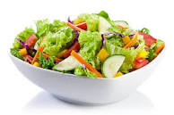

Salad Recipe

Description
This hearty Greek couscous salad uses Israeli couscous. So delicious!
Ingredients
- ½ cup water
- ¼ cup chicken broth
- 1 teaspoon minced garlic
- ½ cup pearl (Israeli) couscous
- 1 cup canned chickpeas (garbanzo beans), rinsed and drained
- ¼ cup chopped sun-dried tomatoes
- ¼ cup sliced Kalamata olives
- 2 tablespoons crumbled feta cheese
- 1 tablespoon white wine vinegar
- 1 ½ teaspoons lemon juice
- 1 teaspoon dried oregano
- ½ teaspoon ground black pepper
Steps
- Pour water and chicken broth into a saucepan; stir in the garlic and
bring to a boil. Stir in pearl couscous, cover the pan, and remove
from heat. Allow couscous to stand until water has been absorbed,
about 5 minutes; fluff with a fork. Allow couscous to cool to warm
temperature.
- Lightly toss couscous, chickpeas, sun-dried tomatoes, olives, and
feta cheese in a large serving bowl.
- To make the dressing: Mix white wine vinegar, lemon juice, oregano,
and black pepper in a small bowl until well combined. Pour over
couscous mixture; toss again to serve.